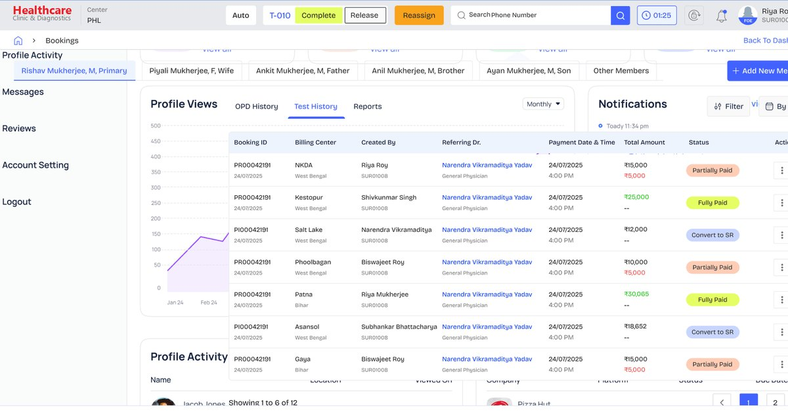

Fintech · Product design
Banking onboarding in three screens.
A skippable three-screen onboarding into QIIB’s mobile banking app, opening onto accounts, partner services, an ATM locator and a live currency converter.

01 — Problem → solution
What was broken, and how I fixed it.
- Problem 01
Returning customers reinstalling the app shouldn’t have to sit through an introduction.
SolutionSkip on the very first screen; Back replaces it once you’ve moved.
- Problem 02
New customers don’t know what the app can do for them yet.
SolutionScreen two previews accounts, the ATM locator and partner services — the tabs they’ll land on.
- Problem 03
Credits and debits are easy to misread at a glance.
SolutionThe home list separates them by arrow direction as well as by sign.
02 — Key screens
The design.
Home & converter
- Home leads with balance and card, then Request and Transfer.
- Credits and debits differ by arrow direction as well as sign.
Home in use
- Balance, card and recent transactions on one screen.
- Four destinations in the tab bar: Home, Partners, Locate, Converter.
03 — Outcome
What shipped.
- 01
A three-screen onboarding with Skip or Back at every step.
- 02
Four destinations behind it: Home, Partners, Locate and Converter.
- 03
A live currency converter with rate trend and last-updated time.
- 04
All of it designed on one shared design system.
Guide new customers without slowing down returning ones: every onboarding step can be skipped, and the last step ends on doing — paying and sending — not reading.
